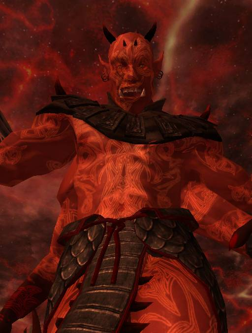

Lord Mehrunes Dagon

Tamriel is just one more Daedric Realm of Oblivion, long since lost to its prince, when he was betrayed by those that served him. Lord Dagon cannot invade Tamriel, his birthright, he comes to liberate the occupied lands.
Ask yourself, how is it that mighty gods die, yet the Daedra stand incorruptable? How is it that the Daedra forthrightly proclaim themselves to man, while the gods cower behind statues and the faithless words of traitor-priests? It is simple... they are not gods at all. The truth has been in front of you since you first were born. The Daedra are the true gods of this universe. Julianos, Dibella and Stendarr are all Lorkhan's betrayers, posing as divinities in the principality that has lost it's guiding light. What are sholarship, love and mercy, compared to fate, night and destruction? The gods are trifling shadows of the First Causes. They have tricked you for ages. Why do you think your world has always been contested ground, the arena of powers and immortals? It is Tamriel, the Realm of Change, Brother to Madness, Sister to Deciet. Your false gods could not entirely rewrite history, thus you remember tales of Lorkhan, vilified, a dead trickster whose heart came to Tamriel. But if a god can die... how does his heart survive? He is daedroth! TAMRIEL AE DAEDROTH! "This Heart is the Heart of the World, for one was made to satisfy the other", you all remember this. It is in every legend. Daedra cannot die, so your so-called gods cannot erase him from your minds completely!